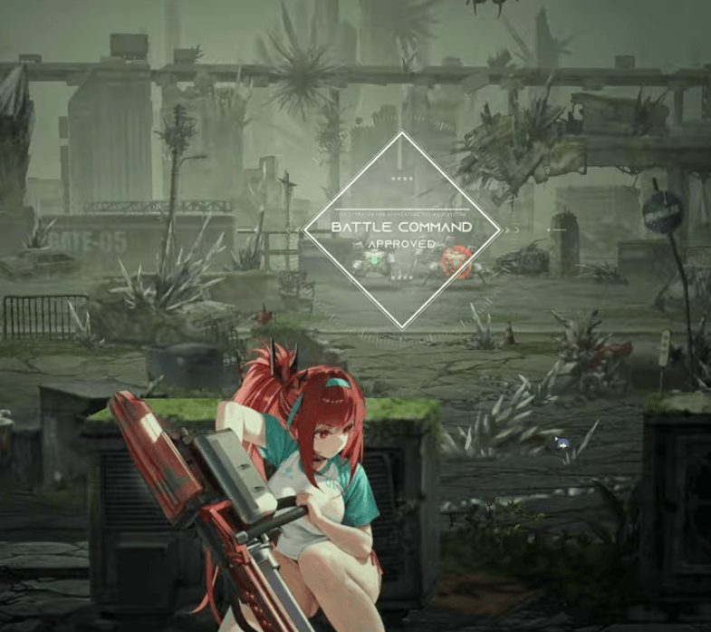
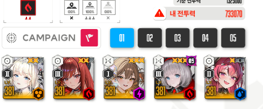

시작부터 게 새끼들 장전 조지고있는곳임

리트하고 세계선찾기 귀찮아서 영상은 안찍었다 미안

조합은 이렇게 가고 약간의 운빨이 필요함.
택틱 -
아니스가 한발 쏘기 - 스페이스 눌러서 전체엄폐 - 아니스만 빼꼼히 두발 더쏴서 버충 완료 (아니스 뒤지면 리트)
A A S 크라운 - 베스티
애들 전체엄폐 상태로 베스티 잡고 아래 장전 빨리하던 게새끼들 다 잡기. (누군가 뒤지면 리트)
풀버 시간동안 위에 새틀라이트? 그 공중 죽창 새끼 점사하면 잡아짐
2번째 라피 버스트 타이밍에 메스트 켜도 되고 안켜도 됨 난 메스트 켰음, 키고 라피 죽창은 해파리새끼한테 ㄱ
보스 나오면 3번째 베스티 버스트 타이밍임. 나머지 잡몹들 뭐 이것저것 많은데 무시하고 보스 점사